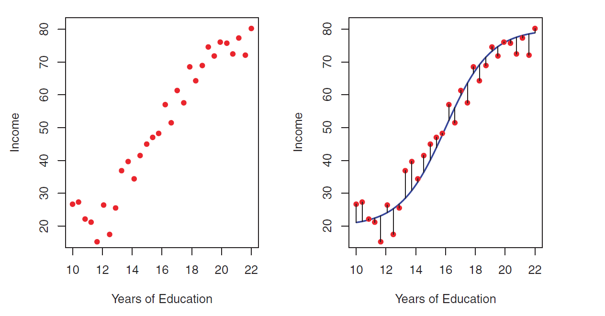
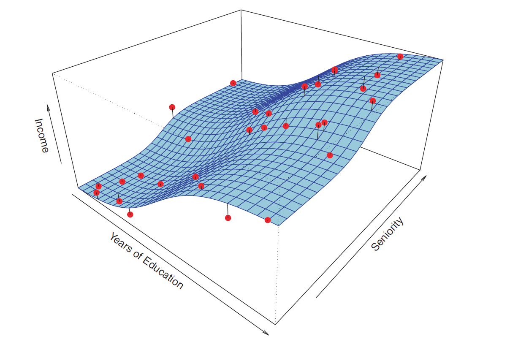
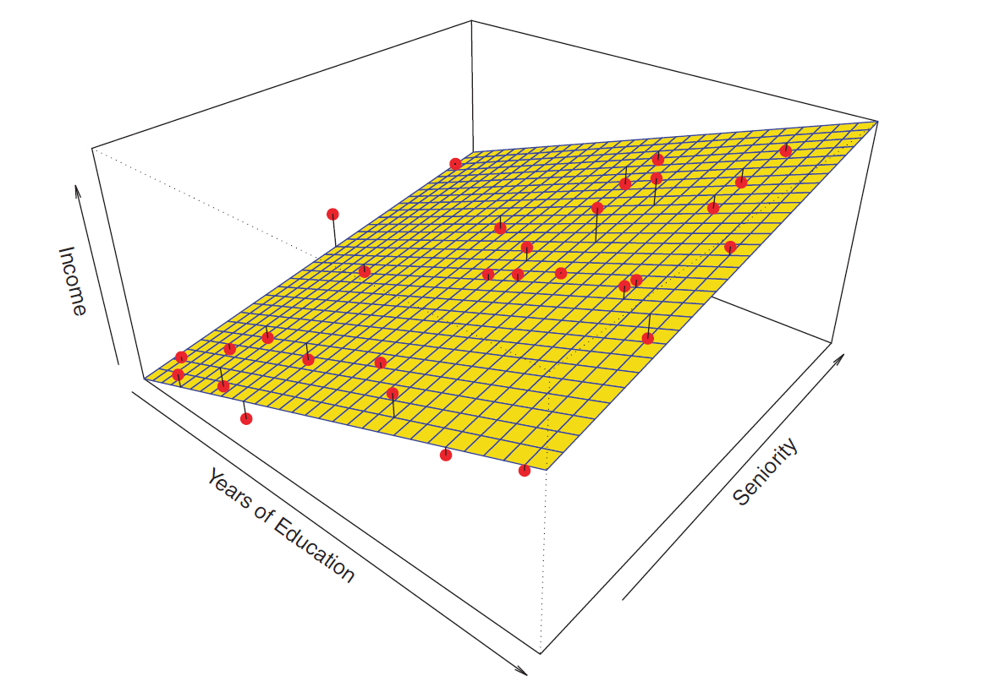
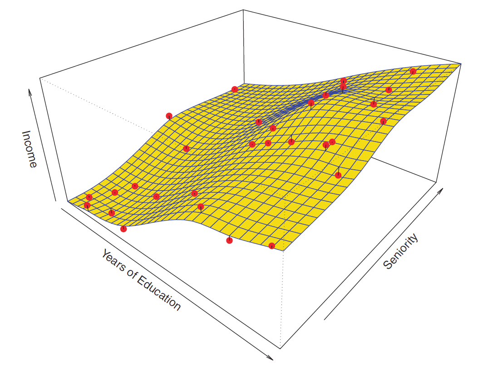
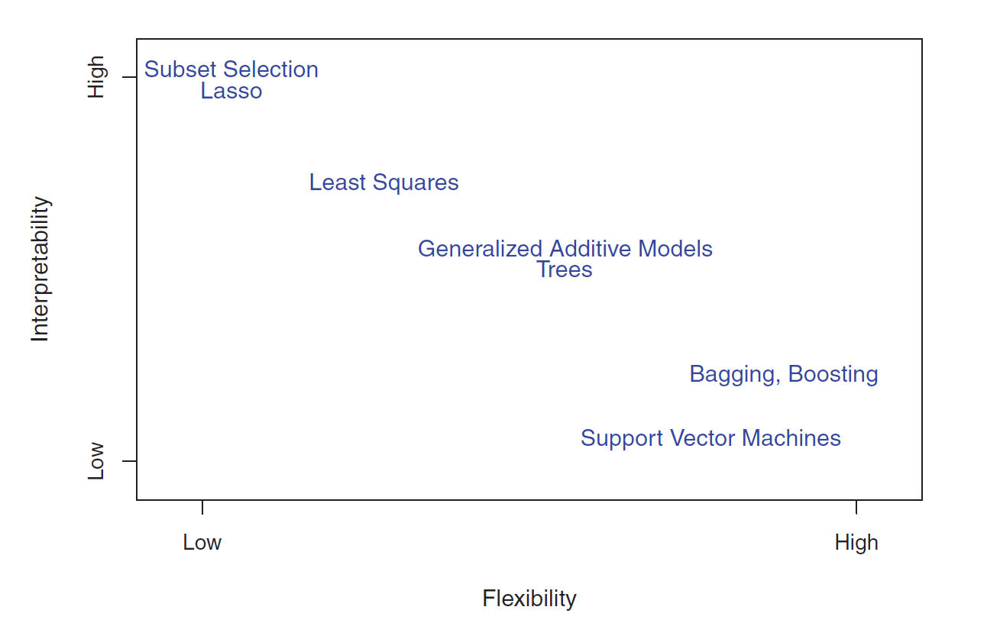
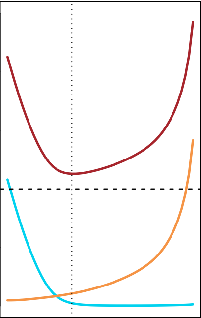
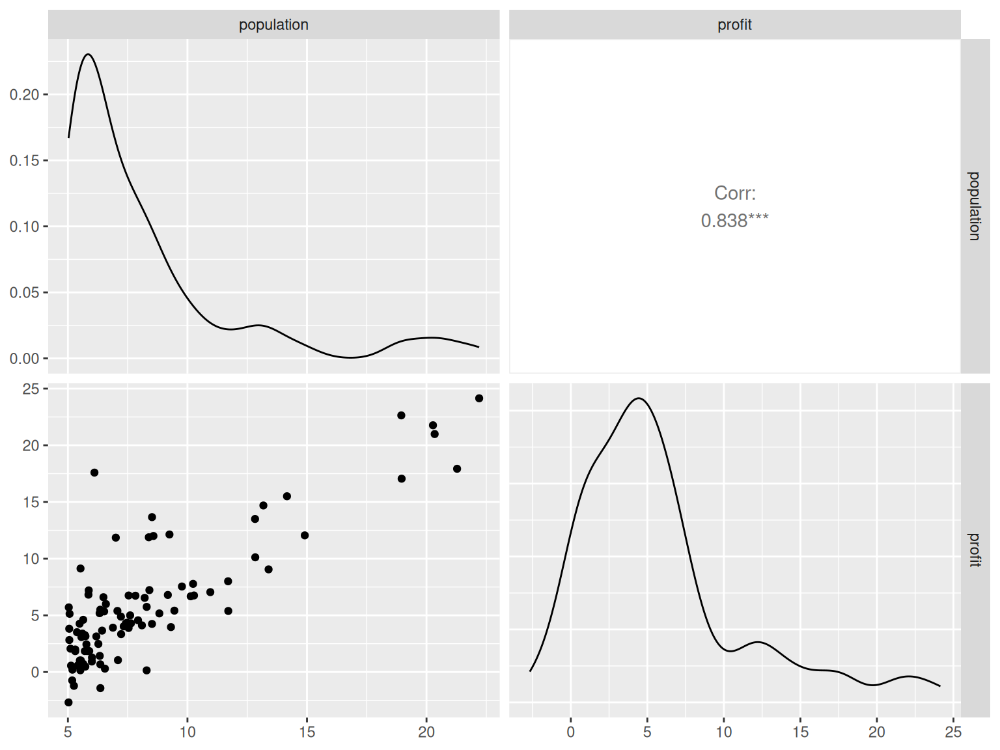
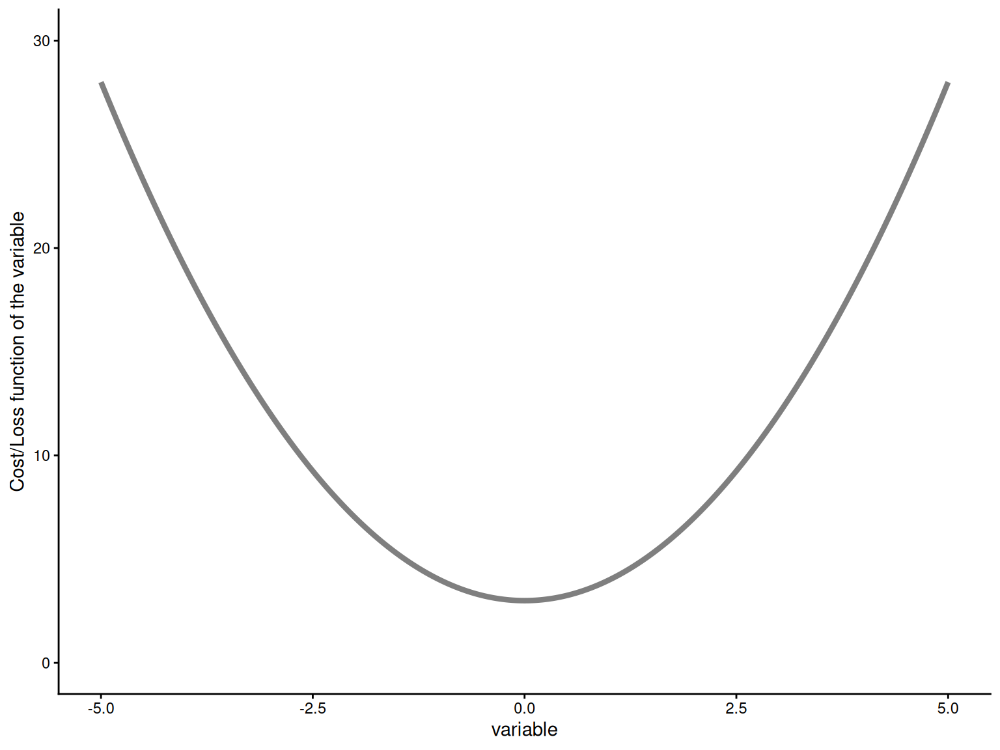
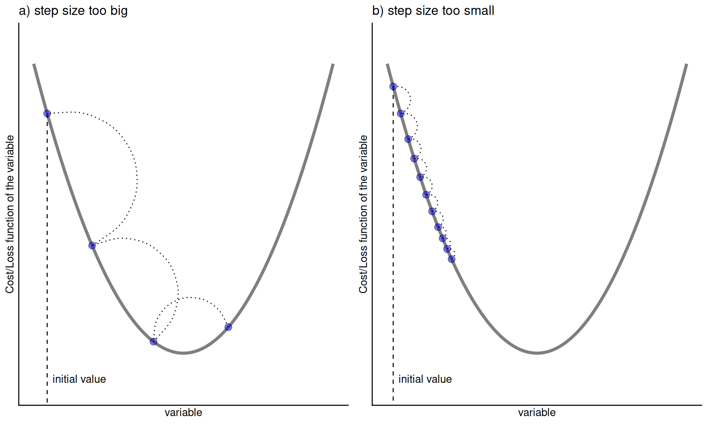

2 Supervised Learning and Trade-offs in SML
2.1 Supervised Learning
More mathematically, the “true”/population model can be represented by
\[Y=f(\mathbf{X}) + \epsilon\]
where \(\epsilon\) is a random error term (includes measurement error, other discrepancies) independent of \(\mathbf{X}\) and has mean zero.
2.2 Supervised Learning: Why Estimate \(f(\mathbf{X})\)?
We wish to know about \(f(\mathbf{X})\) for two reasons:
- Prediction at new unseen data points \(x_0\)
\[\hat{y}_0=\hat{f}(x_0) \ \ \ \text{or} \ \ \ \hat{y}_0=\hat{C}(x_0)\]
Inference: Understand the relationship between \(\mathbf{X}\) and \(Y\).
An ML algorithm that is developed mainly for predictive purposes is often termed as a Black Box algorithm.
The primary objective is to:
Regression (response \(Y\) is quantitative): Build a model \(\hat{Y} = \hat{f}(\mathbf{X})\)
Classification (response \(Y\) is qualitative): Build a classifier \(\hat{Y}=\hat{C}(\mathbf{X})\)
2.3 Supervised Learning: Prediction and Inference
Income dataset
2.4 Supervised Learning: Prediction and Inference
Income dataset


2.5 Supervised Learning: How Do We Estimate \(f(\mathbf{X})\)?
Broadly speaking, we have two approaches.
- Parametric and Structured Methods
- A functional form of \(f(\mathbf{X})\) is assumed, such as \[f(\mathbf{X})=\beta_0 + \beta_1 \mathbf{x}_1 + \beta_2 \mathbf{x}_2 + \ldots + \beta_p \mathbf{x}_p\]
- We estimate the parameters \(\beta_0, \beta_1, \ldots, \beta_p\) by fitting the model to labeled training data.
2.6 Supervised Learning: Parametric Methods
Income dataset
\[\text{Income} \approx \beta_0 + \beta_1 \times \text{Years of Education} + \beta_2 \times \text{Seniority}\]
2.7 Supervised Learning: Non-parametric Methods
Non-parametric approaches do not make any explicit assumptions about the functional form of \(f(\mathbf{X})\). A very large number of observations (compared to a parametric approach) is required to fit a model using the non-parametric approach.
Income dataset

2.8 Supervised Learning: Flexibility of Models
Flexibility refers to the smoothness of functions. (More theoretically, flexibility depends on the number of parameters of the function).
More flexible \(\implies\) More complex \(\implies\) Less Smooth \(\implies\) Less Restrictive \(\implies\) Less Interpretable
2.9 Supervised Learning: Some Trade-offs
Prediction Accuracy versus Interpretability
Good Fit versus Over-fit or Under-fit
2.10 Supervised Learning: Some Trade-offs

2.11 Supervised Learning: Assessing Model Accuracy
Why are we going to study so many different ML techniques?
There is no free lunch in statistics: No one method dominates all others over all possible datasets.
When we estimate \(f(\mathbf{X})\) using \(\hat{f}(\mathbf{X})\), then,
\[E\left[Y-\hat{Y}\right]^2=E\left[f(\mathbf{X})+\epsilon - \hat{f}(\mathbf{X})\right]^2=\underbrace{\left[f(\mathbf{X})-\hat{f}(\mathbf{X})\right]^2}_{Reducible} + \underbrace{Var(\epsilon)}_{Irreducible}\]
\(E\left[Y-\hat{Y}\right]^2\): Expected (average) squared difference between predicted and actual (observed) response.
We will focus on techniques for estimating \(f(\mathbf{X})\) with the objective of minimizing the reducible error.
2.12 Supervised Learning: Assessing Model Accuracy
Suppose we have labeled training data \((x_1,y_1), (x_2, y_2), \ldots, (x_n,y_n)\), i.e, \(n\) training data points/observations.
We fit/train a model \(\hat{y}=\hat{f}(x)\) (or, a classifier \(\hat{y}=\hat{C}(x)\)) on the training data and obtain estimates \(\hat{f}(x_1), \hat{f}(x_2), \ldots, \hat{f}(x_n)\) (or, \(\hat{C}(x_1), \hat{C}(x_2), \ldots, \hat{C}(x_n)\)).
We could then compute the
- Regression
\[\text{Training MSE}=\text{Average}_{Training} \left(y-\hat{f}(x)\right)^2 = \frac{1}{n} \displaystyle \sum_{i=1}^{n} \left(y_i-\hat{f}(x_i)\right)^2\]
- Classification
\[\text{Training Error Rate}=\text{Average}_{Training} \ \left[I \left(y\ne\hat{C}(x)\right) \right]= \frac{1}{n} \displaystyle \sum_{i=1}^{n} \ I\left(y_i \ne \hat{C}(x_i)\right)\]
2.13 Supervised Learning: Assessing Model Accuracy
But in general, we are not interested in how the method works on the training data. We want to measure the accuracy of the method on previously unseen test data.
Suppose, if possible, we have fresh test data, \((x_1^{test},y_1^{test}), (x_2^{test},y_2^{test}), \ldots, (x_m^{test},y_m^{test})\). Then we can compute,
- Regression
\[\text{Test MSE}=\text{Average}_{Test} \left(y-\hat{f}(x)\right)^2 = \frac{1}{m} \displaystyle \sum_{i=1}^{m} \left(y_i^{test}-\hat{f}(x_i^{test})\right)^2\]
- Classification
\[\text{Test Error Rate}=\text{Average}_{Test} \ \left[I \left(y\ne\hat{C}(x)\right) \right]= \frac{1}{m} \displaystyle \sum_{i=1}^{m} \ I\left(y_i^{test} \ne \hat{C}(x_i^{test})\right)\]
2.14 Supervised Learning: Bias-Variance Trade-off
Suppose we have fit a model \(\hat{f}(x)\) to some training data. Let the “true” model be \(Y=f(x)+\epsilon\). Let \((x_0, y_0)\) be a test observation.
We have,
\[\underbrace{\text{Average}_{Test}\left(y_0-\hat{f}(x_0)\right)^2}_{total \ error}=\underbrace{Var\left(\hat{f}(x_0)\right)}_{source \ 3} + \underbrace{\left[Bias\left(\hat{f}(x_0)\right)\right]^2}_{source \ 2}+\underbrace{Var(\epsilon)}_{source \ 1}\]
where \(Bias\left(\hat{f}(x_0)\right)=E\left(\hat{f}(x_0)\right)-f(x_0)\)
source 1: how \(y\) differs from “true” \(f(x)\)
source 2: how \(\hat{f}(x)\) (when fitted to the test data) differs from \(f(x)\)
source 3: how \(\hat{f}(x)\) varies among different randomly selected possible training data
2.15 Bias-Variance Trade-off

2.16 Question!!!
As the flexibility of a model \(\hat{f}(\mathbf{X})\) increases,
its variance \(\underline{\hspace{5cm}}\) (increases/decreases)
its bias \(\underline{\hspace{5cm}}\) (increases/decreases)
its training MSE \(\underline{\hspace{5cm}}\) (increases/decreases)
its test MSE \(\underline{\hspace{5cm}}\) (increases/decreases/U-shaped)
2.17 Linear Regression
Mathematically, a supervised learning problem can be represented by
\[Y=f(\mathbf{X}) + \epsilon\]
where \(\epsilon\) is a random error term (includes measurement error, other discrepancies) independent of \(\mathbf{X}\) and has mean zero.
Objective: To approximate/estimate \(f(\mathbf{X})\)
For linear regression, we assume that \(f(\mathbf{X})\) is a linear function of \(\mathbf{X}\), that is, for \(p=1\)
\[f(\mathbf{X}) = \beta_0 + \beta_1 X_1\]
2.18 Linear Regression: Example
Suppose the CEO of a restaurant franchise is considering opening new outlets in different cities. They would like to expand their business to cities that give them higher profits with the assumption that highly populated cities will probably yield higher profits.
They have data on the population (in 100,000) and profit (in $1,000) at 97 cities where they currently have outlets.
The first ten observations of the dataset are shown below.
population profit
1 6.1101 17.5920
2 5.5277 9.1302
3 8.5186 13.6620
4 7.0032 11.8540
5 5.8598 6.8233
6 8.3829 11.8860
7 7.4764 4.3483
8 8.5781 12.0000
9 6.4862 6.5987
10 5.0546 3.81662.19 Linear Regression
Given this dataset, our objective is to estimate \(\beta_0\) and \(\beta_1\).
If we are able to estimate \(\beta_0\) and \(\beta_1\), we can
predict the profit for a new city with a given population,
understand the relationship between
populationandprofitbetter.
2.20 Linear Regression: Example
Some Exploratory Data Analysis (EDA)

2.21 Linear Regression: Estimating Parameters
We use training data to find \(b_0\) and \(b_1\) such that
\[\hat{y}=b_0 + b_1 \ x\] Observed response: \(y_i\) for \(i=1,\ldots,n\)
Predicted response: \(\hat{y}_i\) for \(i=1, \ldots, n\)
Residual: \(e_i = \hat{y}_i - y_i\) for \(i=1, \ldots, n\)
Mean Squared Error (MSE): \(MSE =\dfrac{e^2_1+e^2_2+\ldots+e^2_n}{n}\) also known as the loss/cost function
Problem: Find \(b_0\) and \(b_1\) which minimizes \(MSE\)
2.22 Gradient Descent Algorithm
How do we minimize the \(MSE\)?
One optimization technique we can use is called the gradient descent.
NOTE: Gradient Descent is not a machine learning technique. It is an optimization technique that helps to build machine learning models.
2.23 Gradient Descent Algorithm

Updates to the variable:
\[\text{new value of variable} = \text{old value of variable} - \big(\text{step size} \times \text{gradient of function with respect to variable}\big)\]
2.24 Gradient Descent Algorithm

2.25 Gradient Descent Algorithm

2.26 Gradient Descent for Linear Regression
Objective: We want to find \(b_0\) and \(b_1\) which minimizes
\[MSE = \dfrac{e^2_1+e^2_2+\ldots+e^2_n}{n} = \dfrac{(\hat{y}_1 - y_1)^2 + (\hat{y}_2 - y_2)^2 + \ldots + (\hat{y}_n - y_n)^2}{n}\]
\[MSE = \dfrac{(b_0 + b_1 \ x_1 - y_1)^2 + (b_0 + b_1 \ x_2 - y_2)^2 + \ldots + (b_0 + b_1 \ x_n - y_n)^2}{n}\]
\[MSE = \displaystyle \dfrac{1}{n}\sum_{i=1}^{n} (b_0 + b_1 \ x_i - y_i)^2 = \displaystyle \dfrac{1}{n}\sum_{i=1}^{n} (\hat{y}_i - y_i)^2 = \displaystyle \dfrac{1}{n}\sum_{i=1}^{n} (e_i)^2\]
2.27 Gradient Descent for Linear Regression
To minimize \(MSE\) with respect to \(b_0\) and \(b_1\), we need the derivatives/gradients of \(MSE\) with respect to \(b_0\) and \(b_1\).
\[\text{gradient of MSE with respect to} \ b_0 = \dfrac{2}{n} \displaystyle \sum_{i=1}^{n} (b_0 + b_1 \ x_i - y_i) = \dfrac{2}{n} \displaystyle \sum_{i=1}^{n} (\hat{y}_i - y_i)\]
\[\text{gradient of MSE with respect to} \ b_1 = \dfrac{2}{n} \displaystyle \sum_{i=1}^{n} x_i (b_0 + b_1 \ x_i - y_i) = \dfrac{2}{n} \displaystyle \sum_{i=1}^{n} x_i (\hat{y}_i - y_i)\]
2.28 Gradient Descent for Linear Regression
The gradient descent updates will be as follows:
- For \(b_0\)
\[b_0 \ \text{(new)} = b_0 \ \text{(old)}- \bigg(\text{step size} \times \text{gradient with respect to} \ b_0\bigg)\] \[b_0 \ \text{(new)} = b_0 \ \text{(old)}- \bigg(\text{step size} \times \dfrac{2}{n} \displaystyle \sum_{i=1}^{n} (\hat{y}_i - y_i)\bigg)\]
- For \(b_1\)
\[b_1 \ \text{(new)} = b_1 \ \text{(old)} - \bigg(\text{step size} \times \text{gradient with respect to} \ b_1 \bigg)\]
\[b_1 \ \text{(new)} = b_1 \ \text{(old)} - \bigg(\text{step size} \times \dfrac{2}{n} \displaystyle \sum_{i=1}^{n} x_i (\hat{y}_i - y_i)\bigg)\]
Let’s now implement this algorithm in R.